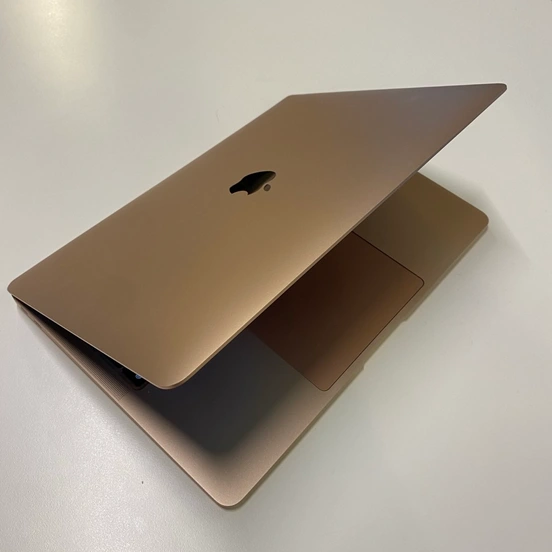

Min Computer

Type
Jeg har to computere, som fungerer rigtig godt i samspil med hinanden. Jeg tager min rosa-guld MacBook Air laptop med, når jeg fx skal på studiet. Derhjemme står min 'rigtige' computer, en iMac med M4 chip, som kan håndtere projekter, der er mere krævende.
Specifikationer
Min MacBook Air er fra 2020 og har Apples M1 chip. Den opererer på macOS og har 16GB RAM og 512GB harddiskplads. Den kommer med en 8-core CPU, 7-core GPU og en 16-core Neural Engine. Desuden har den en 13,3" indbygget retinaskærm med 227 pixels per tomme.